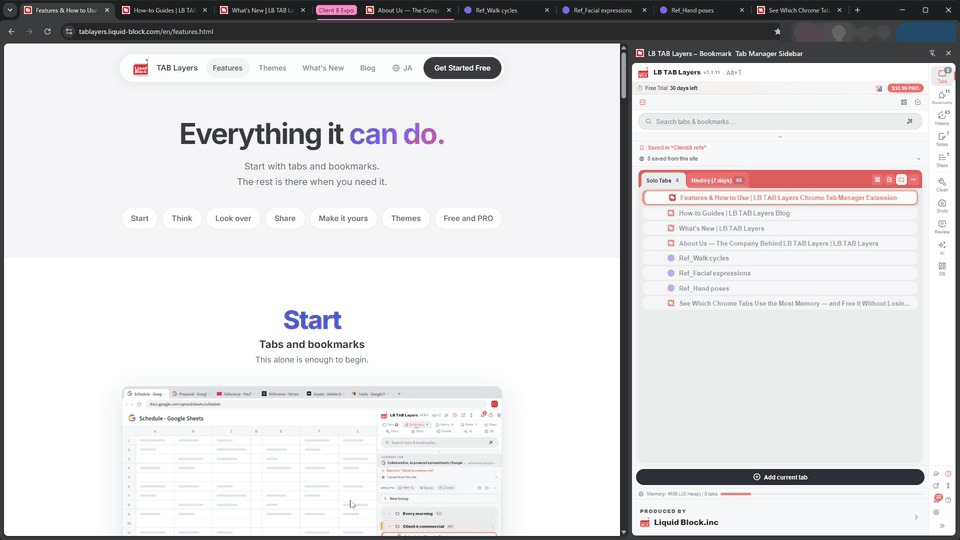
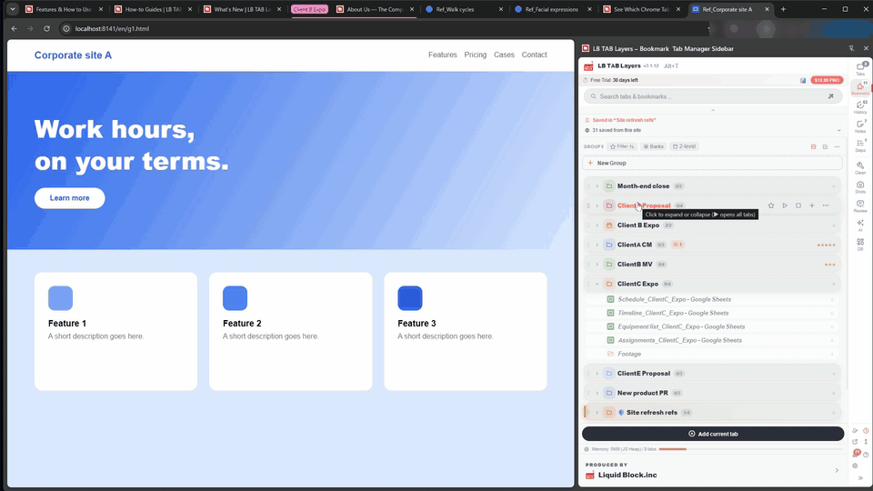
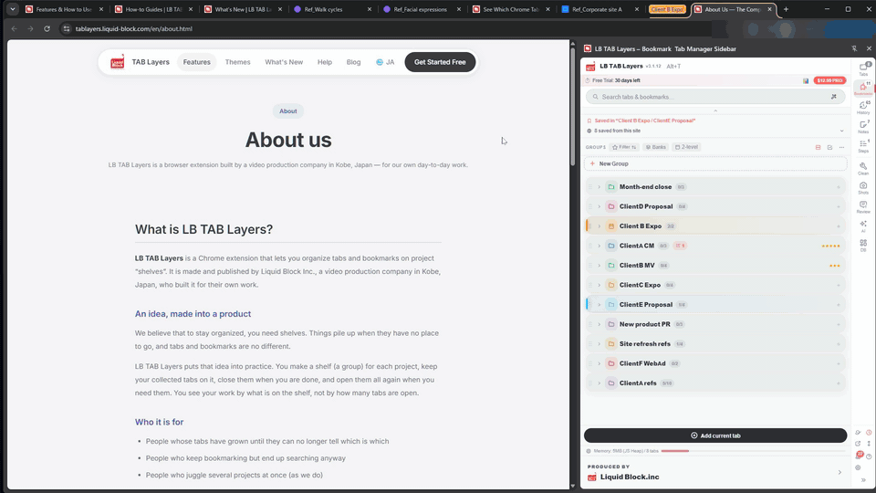

For people who just installed it, or are switching from another tool.
First-run screen
Choose from “When would you like to use it?” and your first groups are created
Where: Right after installing / Settings › Data
Right after you install it, a screen asks “When would you like to use it?”. Choose, and your first groups are created to match. You can open it again later from Settings › Data.
Choose Chrome folders and turn them into groups. Can be undone
Where: First-run screen / Settings › Data
Choose folders from your current Chrome bookmarks and turn them into groups. Your original bookmarks are not deleted, and the import can be undone. Available from the first-run screen or Settings › Data.
Import from a file
Read bookmarks from HTML, CSV or TXT
Where: The import screen
On the import screen, read bookmarks from an HTML, CSV or TXT file. Bookmarks exported from another browser can be imported too.
Switch from OneTab
Paste a OneTab export and it becomes groups
Where: Settings › Data
In Settings › Data, paste the list exported from OneTab and it becomes groups. The tabs you've collected in OneTab carry straight over.
Suggests the sites you open most, from the last 2 weeks of history
Where: Settings › Data
In Settings › Data, find the sites you open most in the last 2 weeks of history, and get them as suggestions to save.
Feature badges
The features you've used add up as medals (6 chapters, 75 badges). A celebration the first time you do something
Where: Bottom of the right rail
Click the badge at the bottom of the right rail to open your book of feature badges. There are 75 badges in 6 chapters. For the ones you haven't earned yet, “Try” takes you to where that feature is.

The features you use add up as medals.

The first time you use a feature, you get a celebration on the spot.

Gold medals come with a shower of confetti.
Weekly Report
Estimates the time you've saved, from things like your number of searches
Where: The chart at the top
Click the chart at the top of the panel to see the Weekly Report. It estimates the time you've saved, based on things like your number of searches.
Backup
Export and import groups, notes and Step Tasks as a file
Where: Settings › Data
In Settings › Data, export your groups, notes and Step Tasks to a file as a backup. Importing overwrites what you have now.
Help & contact
A how-to guide, a replay of the guide, and a contact form
Where: “?” at the bottom of the right rail
From “?” at the bottom of the right rail, open the how-to guide, replay the guide, or open the contact form.
Free & PRO
The free limits, the days left in your trial, and PRO: paid once with a lifetime license in 2026
Where: The bar at the top
Saving tabs, search, opening and closing together, and syncing with bookmarks are free. For 30 days after you install it, you can try every PRO feature too. The days left in your trial are shown in the bar at the top of the panel. PRO is paid once with a lifetime license if you buy by December 31, 2026, and becomes an auto-renewing subscription from 2027.
Other browsers (Brave and Edge)
Also works in Brave and Microsoft Edge, installed from the Chrome Web Store
Where: The LB TAB Layers page in the Chrome Web Store
LB TAB Layers also works in Brave and Microsoft Edge (checked in November 2026: the side panel, groups, opening with ▶, and starting from your current bookmarks). In both, install it from the LB TAB Layers page in the Chrome Web Store. In Brave, click Add to Brave, then Add extension. In Edge, if you are asked to allow extensions from other stores, select Allow, then click Add to Chrome and Add extension. It is not listed in the Microsoft Edge Add-ons store. “Sync with Google Calendar” and “Google Sheets sync”, which sign in with a Google account, don’t work in Brave or Edge. Your groups are saved in that browser’s bookmarks.